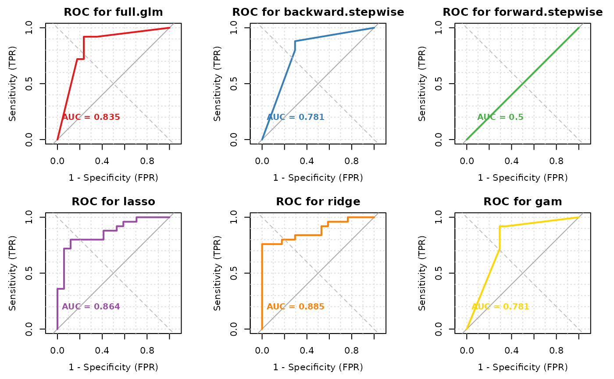

A Binary Classification Model Selection
OptimalModelSearch.RdThis function does binary classification model selection. It compares multiple models (full logistic regression, backward stepwise, forward stepwise, GAM, lasso, and ridge) based on user specified criterions including AUC, Accuracy and AIC. This function provides a simplified method for fitting these binary classification models simultaneously. It then returns the best model based on a predetermined set of control parameters. These parameters include evaluation criteria, formula, data, training percentage and threshold for accuracy calculations.
Usage
OptimalModelSearch(formula, data, criterion = c("AUC", "Accuracy", "AIC"),
training_percent = 0.8, threshold = 0.5,
suppress_warnings = FALSE, plot_roc = FALSE,
plot_comparison = FALSE, multi_panel = FALSE,
plot_cm = FALSE)Arguments
- formula
A formula object which defines the model structure same as the formula object for lm, glm, gams and other model building functions.
- data
A data.frame or matrix object where the variables in the formula object can be found. The response variable must code as 1 or 0 for the two classes.
- criterion
A criteria specifying which metric the model selection should be based on. This function supports AIC, Accuracy, and AUC
- training_percent
A numeric value between 0 and 1 indicating the proportion of data to use for training. Default is 0.8.
- threshold
A number between 0 and 1 which specifies what threshold to classify observations as positive or negative. It applicable when method is Accuracy. Threshold tells the function how to distinguish between the two classes. The default is 0.5
- suppress_warnings
Logical indicating whether to suppress warning messages (such as convergence warnings). Default is FALSE. Set to TRUE to hide excessive warnings when using datasets with near-perfect separation.
- plot_roc
Logical indicating whether to automatically plot ROC curves when criterion is "AUC". Default is FALSE. When TRUE, it will display the ROC curve of the best model.
- plot_comparison
Logical indicating whether to plot comparison of all models' ROC curves when plot_roc is TRUE. Default is FALSE. When TRUE, it will display ROC curves for all models on a single plot.
- multi_panel
Logical indicating whether to display each model in its own panel when plot_comparison is TRUE. Default is FALSE. When TRUE, it will display each model's ROC curve in a separate panel arranged in a grid layout.
- plot_cm
Logical indicating whether to automatically plot the confusion matrix when criterion is "Accuracy". Default is FALSE. When TRUE, it will display a visual representation of the confusion matrix for the best model.
Details
The "formula" input specifies how the predictors are included in the model. It functions similarly to the formula objects used in glm, lm, and other modeling functions. This design choice is intended to allow users to easily fit all specified models.
The "Data" input refers to the dataset used for modeling, which can be either a matrix or a dataframe. It's crucial to ensure that all variables specified in the formula are present in the data.
The "Criterion" input allows users to search for a model based on their preferred performance measure. Currently, our function supports three criteria including AUC (which is the most popular in this class), Accuracy, and AIC.
In addition, the "training_percent" input allows users to assess models based on the proportion of training data. This flexibility enhances the model specification process and introduces more dynamics into model building, especially in the case of binary classification. And lastly, the threshold option is applicable when the criterion is Accuracy, it tells the function how to distinguish between the two classes in the case where a confusion matrix had to be generated to calculate the accuracy and other measures such as sensitivity and specificity. The default is 0.5 and users can use this flexibility to train their model based on their knowledge of the problem.
The function compares the following models:
Full Logistic Regression: Uses all predictors in the formula
Backward Stepwise: Performs backward selection from the full model
Forward Stepwise: Starts with intercept-only model and adds predictors
GAM (Generalized Additive Model): Fits smooth terms for numeric predictors
Lasso Regression: L1 regularization that can shrink coefficients to zero
Ridge Regression: L2 regularization that shrinks coefficients
The function provides automatic visualization based on the chosen criterion:
When criterion="AUC": Use plot_roc=TRUE to display the ROC curve of the best model, or with plot_comparison=TRUE to compare all models' ROC curves. Use multi_panel=TRUE for clearer visualization with separate panels for each model.
When criterion="Accuracy": Use plot_cm=TRUE to display the confusion matrix of the best model, showing true/false positives/negatives and other metrics.
When criterion="AIC": No visualization is provided as AIC is a numerical measure.
Value
- criterion
The criterion used for model selection.
- best_model_name
Name of the best performing model.
- performance_metric
The value of the specified criterion for the best model.
- details
Additional model details:
When criterion is "AUC": Contains the ROC object from pROC package, which can be plotted using plot(result$details).
When criterion is "Accuracy": Contains the confusionMatrix object.
When criterion is "AIC": Contains AIC values.
Examples
##==Example 1: Accuracy criterion====##
# \donttest{
data(PimaIndiansDiabetes, package="mlbench")
data.t <- PimaIndiansDiabetes
data.t$diabetes <- ifelse(data.t$diabetes=="neg", 0, 1)
result <- OptimalModelSearch(formula=diabetes~., data=data.t,
criterion="Accuracy", training_percent=0.8,
threshold=0.54, suppress_warnings=TRUE)
result$best_model_name # View best model
#> [1] "lasso.Accuracy"
# }
##==Example 2: AUC criterion====##
# \donttest{
data(Sonar, package="mlbench")
dat <- Sonar
dat$Class <- ifelse(dat$Class=="R", 0, 1)
result <- OptimalModelSearch(formula=Class~., data=dat,
criterion="AUC", training_percent=0.8,
suppress_warnings=TRUE)
#> Setting levels: control = 0, case = 1
#> Setting direction: controls < cases
#> Setting levels: control = 0, case = 1
#> Setting direction: controls < cases
#> Setting levels: control = 0, case = 1
#> Setting direction: controls < cases
#> Setting levels: control = 0, case = 1
#> Setting direction: controls < cases
#> Setting levels: control = 0, case = 1
#> Setting direction: controls < cases
#> Setting levels: control = 0, case = 1
#> Setting direction: controls < cases
result$best_model_name # View best model
#> [1] "ridge"
# }
##==Example 3: AIC criterion====##
# \donttest{
data(PimaIndiansDiabetes, package="mlbench")
data.t <- PimaIndiansDiabetes
data.t$diabetes <- ifelse(data.t$diabetes=="neg", 0, 1)
result <- OptimalModelSearch(formula=diabetes~., data=data.t,
criterion="AIC", training_percent=0.8,
suppress_warnings=TRUE)
result$best_model_name # View best model
#> [1] "gam"
# }
##==Example 4: ROC Visualization with Multi-Panel Plot====##
# \donttest{
data(Sonar, package="mlbench")
dat <- Sonar
dat$Class <- ifelse(dat$Class=="R", 0, 1)
# Plot all ROC curves in separate panels - clearer visualization
result <- OptimalModelSearch(formula=Class~., data=dat,
criterion="AUC", training_percent=0.8,
suppress_warnings=TRUE, plot_roc=TRUE,
plot_comparison=TRUE, multi_panel=TRUE)
#> Setting levels: control = 0, case = 1
#> Setting direction: controls < cases
#> Setting levels: control = 0, case = 1
#> Setting direction: controls < cases
#> Setting levels: control = 0, case = 1
#> Setting direction: controls < cases
#> Setting levels: control = 0, case = 1
#> Setting direction: controls < cases
#> Setting levels: control = 0, case = 1
#> Setting direction: controls < cases
#> Setting levels: control = 0, case = 1
#> Setting direction: controls < cases

# }